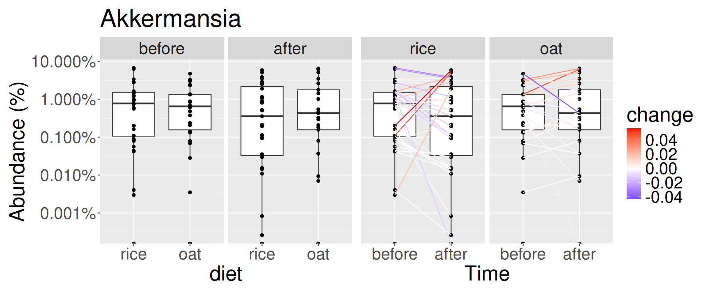
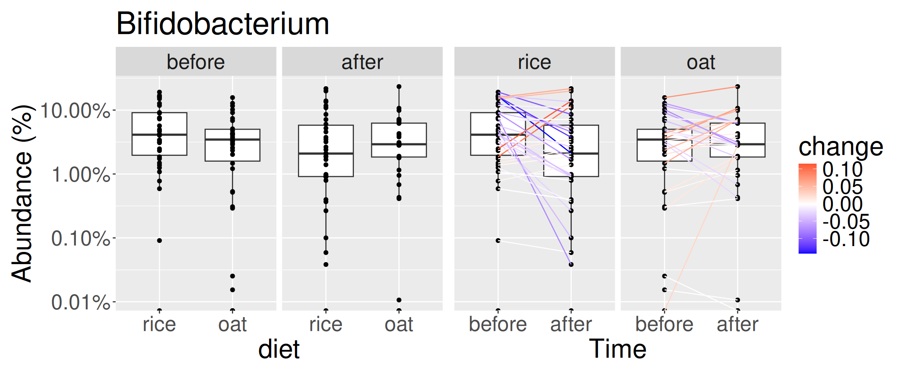
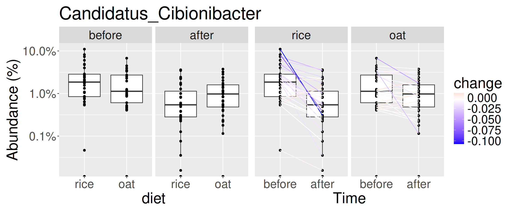
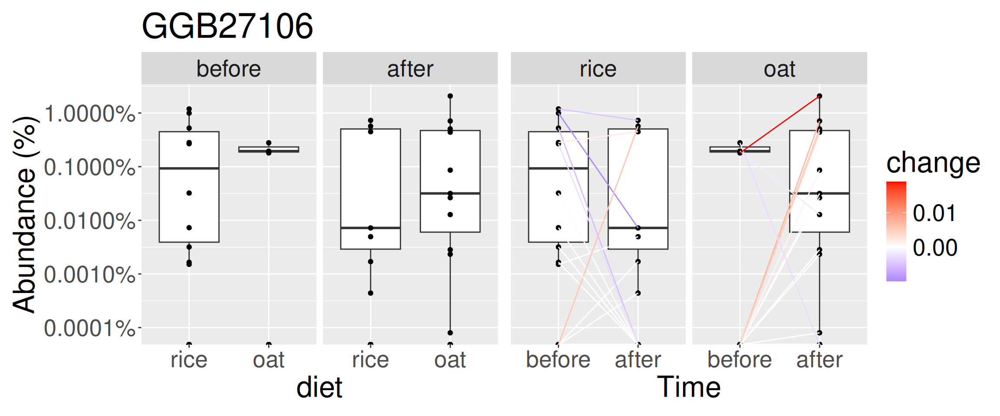
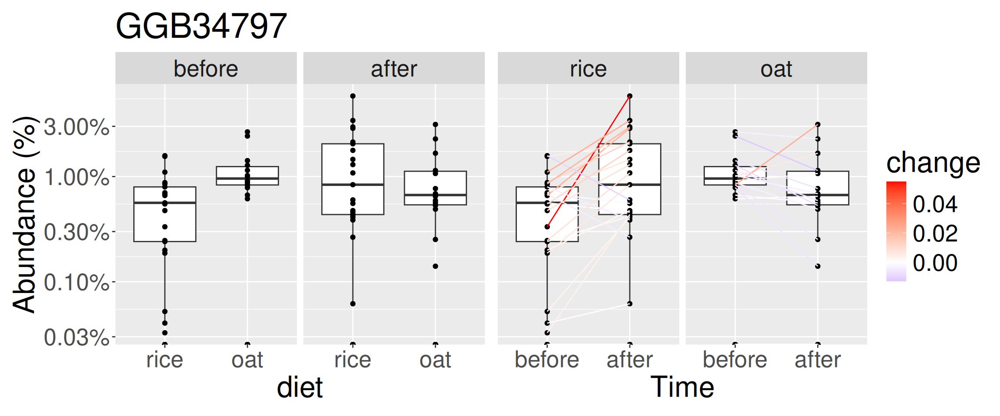
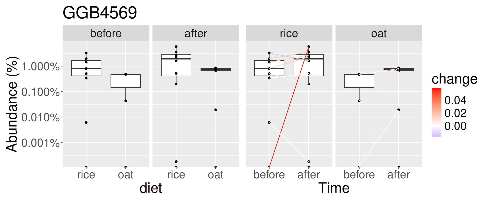
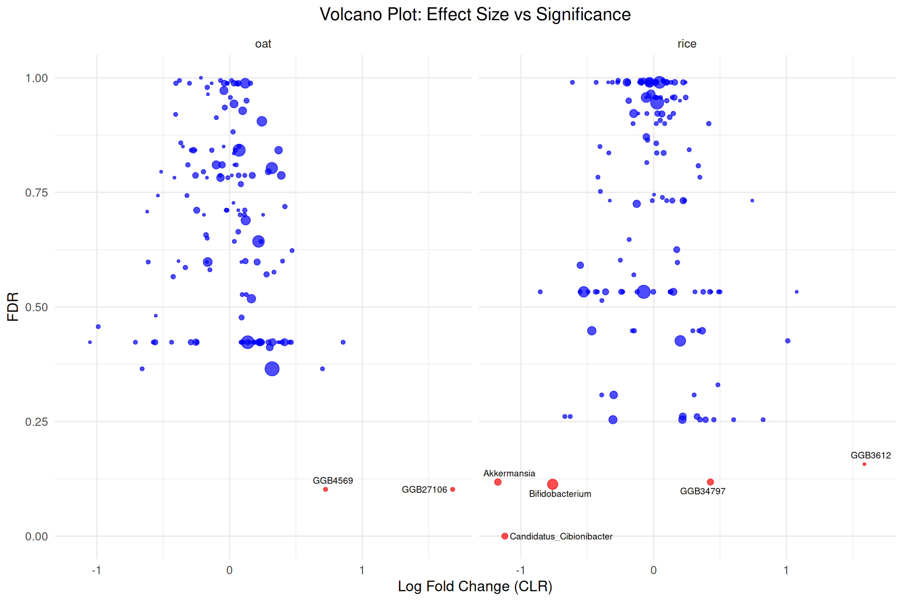

before after
0 5 Differential abundance analysis
Analysis information:
- Taxonomic level: genus_prevalent
Taxa that are less prevalent than this (in relabundance) have been agglomerated:
- Detection threshold: 0.1%
- Prevalence threshold: 10%
- Number of taxonomic groups: 139
Number of significant findings within time points (Kruskal test, Benjamini-Hochberg FDR adjustment).
Number of significant findings within treatments (Paired Wilcoxon test, Benjamini-Hochberg FDR adjustment).
- Multiple testing correction: BH
- Statistical test: Paired Wilcoxon
rice oat
5 2 Let us look more closely to the significant hits. The logFC corresponds to logFC in CLR (tp2-tp1).







For a complete table of results, see complete results
